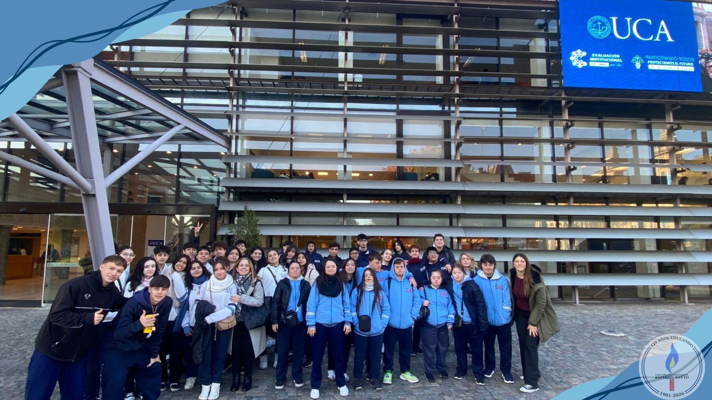
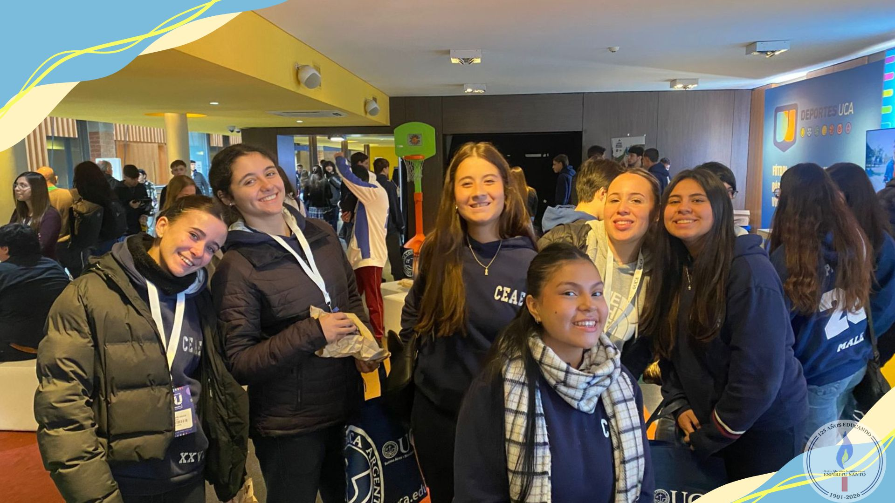

Salida al mundo UCA
Por: Vito Frega, Victoria Vega y Jacqueline Gonzalez

Participaron los alumnos de 5ºA y B.
El 15 de mayo las 2 divisiones de 5to fuimos de visita a la UCA (Universidad Católica Argentina).
Nos recibieron nuestros docentes en la puerta y nos dijeron que podríamos ir a cualquier charla que queramos.
Elegimos en la primera hora una charla llamada "Mí primer empleo", estuvo muy entretenida y nos enseñaron a hacer nuestro CV.
Luego fuimos en la segunda hora a la charla de ciencia de datos, donde nos enseñaron la diferencia de ingeniería en inteligencia artificial y ciencia de datos.
Al final en la última hora fuimos a finanzas donde nos enseñaron la mentalidad del trabajo. También había una sala donde había juegos para hacer y además nos dieron un refrigerio para que tengamos.
